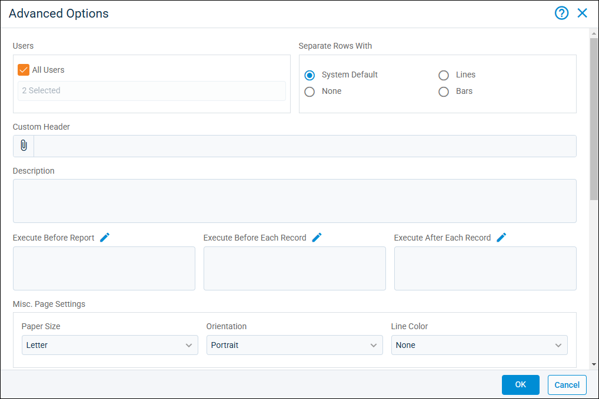

Source: https://rmxhelp.rentmanager.com/Topics/Express/CSH/Report-Writer-Advanced-Options.htm
Report Writer Advanced Options (Pop-Up)
Report Writer advanced options can be used to customize the report templates you create to determine things such as the format of the report data, user access, and what happens when the report is executed.
Related Privileges
| Group | Privilege | Column |
|---|---|---|
| Letter/Email Templates/Reports/Packets | Service Manager report writer templates | View, Edit |
For more information, refer to Control User Access. Additionally, you need privileges to each report type you wish to view and manage.
To view and manage advance Report Writer options, go to  arrow_forward
arrow_forward  Report Writer and select the Report Writer template you wish to manage. Then, on the Edit Report page in the Report Options section, click Advanced.
Report Writer and select the Report Writer template you wish to manage. Then, on the Edit Report page in the Report Options section, click Advanced.

Users
In this section of the pop-up, you can select the users who are granted access to generate the custom report from Report Writer. If a user is granted access to a report here, they have access to the report even if they do not have access granted in the Reports tab on the user's details page. For more information, refer to Control Custom Report Access.
Separate Rows With
The following options are available for distinguishing how rows display on the report.
| Option | Description |
|---|---|
|
System Default |
The report uses the style established in general report options system preferences. For more information, refer to General Report Options (System Preferences). |
|
None |
The report displays with no style formatting on each row. |
|
Lines |
The report displays with a line between each row. |
|
Bars |
The report displays with every other row highlighted in gray. |
Header, Description, and Report Execution Fields
The following options are available in this section.
| Options | Description |
|---|---|
|
Custom Header |
The image to display at the top of the page. |
|
Description |
Additional information used to describe the report. This description is viewed on the Report Writer Manager page. |
|
Execute Before Report |
The actions you want Rent Manager to perform before the report is generated. This field can be used to set parameters such as needing to select a date range before the report can be generated. |
|
Execute Before Each Record |
The actions you want Rent Manager to perform before each record in the report is processed. This field can be used to script in methods for evaluating what happens to the record before it displays on the report. For example, if you want to output information from only specific leases on a tenant account, you can use loops and If statements to compare lease indexing. An example of this scripting is shown in the online template library (OTL) report Advanced Contact Listing. For more information, refer to Online Template Library (Page). |
|
Execute After Each Record |
The actions you want Rent Manager to perform after each record in the report is processed. This field can be used to add an additional variable after each record. |
Misc. Page Settings
The following drop-down fields display for these page settings.
| Field | Description | |||||
|---|---|---|---|---|---|---|
|
Paper Size |
The desired paper size (Letter, Legal, Executive, A4, or A5). |
|||||
|
Orientation |
The desired positioning, Portrait or Landscape, of the page. |
|||||
|
Line Color |
The desired color in which to display your report entities (property, unit, tenant, prospect, vendor, owner, or owner prospect) based on colors that have been assigned. For more information, refer to Colors (Page). |
|||||
|
Page Margins (inches)
This section displays options for selecting the desired distance in inches you want report data to display from the edge of the page for the Left, Right, Top, and Bottom margins.
Sort Order
This section determines which report columns can be sorted and the method used to sort them. Columns that are left unchecked are not available to be sorted when the report is generated. The  can be used to arrange the checked columns by order in which they should be sorted. The first column to be checked is sorted first, followed by the next checked column, and so on until all columns checked have been sorted.
can be used to arrange the checked columns by order in which they should be sorted. The first column to be checked is sorted first, followed by the next checked column, and so on until all columns checked have been sorted.